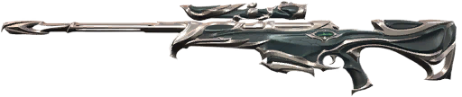
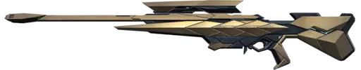
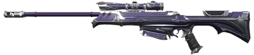
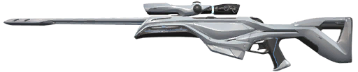
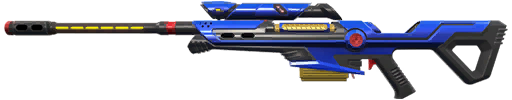
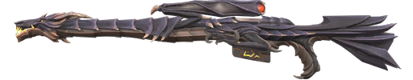
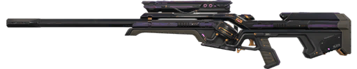
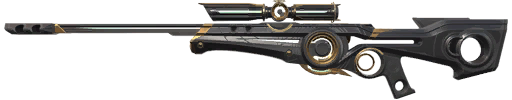
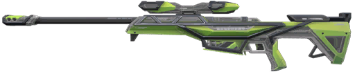
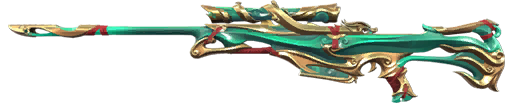

Community Favorite Skins

Forsaken features a corrupted royal theme with green-black energy flowing through the weapon. It feels mysterious and slightly dark, with strong visual effects that give it a powerful identity. Players like it because it balances elegance with a corrupted, dangerous aesthetic.

Araxys has a futuristic alien-tech design with sharp red energy accents and a heavy, intimidating feel. The sound design is deep and powerful, making each shot feel impactful and aggressive. It is popular among players who like darker sci-fi themes and want a sniper that feels dominant and high-tech.

The Reaver Operator is one of the most iconic sniper skins in Valorant, known for its dark, cursed aesthetic and incredibly satisfying shot sound. Every shot feels heavy and impactful, which makes landing headshots feel even more rewarding. Its purple energy effects and dramatic kill animation give it a strong presence, making it a top choice for players who want intimidation and style.

The Ion Operator is famous for its extremely clean and futuristic design, featuring a white body with glowing blue energy accents. It is widely considered one of the best “aim-focused” skins because it removes distractions and provides very clear audio feedback. Many players prefer it for ranked play since it helps maintain focus during long-range duels.

The Radiant Entertainment System Operator looks like an arcade machine with a small screen and changing visuals. It has fun effects, custom sounds, and a flashy style that makes it stand out from normal sniper skins.

The Ion Operator is famous for its extremely clean and futuristic design, featuring a white body with glowing blue energy accents. It is widely considered one of the best “aim-focused” skins because it removes distractions and provides very clear audio feedback. Many players prefer it for ranked play since it helps maintain focus during long-range duels.

The Prelude to Chaos Operator has a dark mechanical design with glowing red energy. It feels heavy and aggressive, with strong sound effects that make each shot feel powerful and impactful.

The Origin Operator has a clean futuristic design with a floating core that rotates inside the weapon. Its animations are smooth and modern, and it has a very sci-fi “advanced technology” feel. It is less flashy than Glitchpop or Elderflame but very polished and satisfying.

The RGX Operator is a mechanical, esports-style sniper with LED color customization and smooth animations. It feels very responsive and modern, with a strong focus on clean visuals and satisfying reload mechanics. Many players enjoy it because it combines competitive clarity with stylish design.

The Imperium Operator is a royal dragon-themed skin with gold and white details. It feels clean but powerful, and its finisher is one of the most flashy and satisfying in the game. The different color variants also make it feel more customizable.